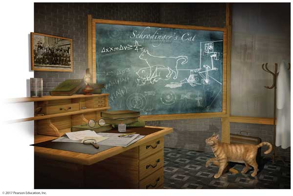
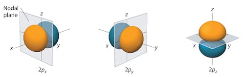
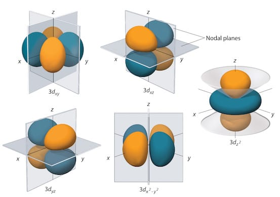

Chapter 7—The Electronic Structure of Atoms

Chapter 7 powerpoint notes.
Useful info
Are you an expert at generating electron configurations?
Simulations
Molecules and light
Adjust light source slider and begin your observations of how different molecules react to different light sources. Note that the interactive elements in this sim have simple description that can be accessed using a screen reader.

| Click to Run |
Wave Interference
Investigate the properties of waves, such as light! See how waves can interfere and diffract.

| Click to Run |
Probability maps of electrons in atoms
We can't talk about the trajectory of an electron in an atom thanks to the Heisenberg uncertainty principle. However, we can talk about probability maps or orbitals! Try checking the "Trace Electrons" button to see how the electron density map builds up over time!
Other Stuff
- Hydrogen atom orbitals (generated on the fly for your pleasure).
- More orbitals to play with! Pick them from a pop-up menu at the bottom of the window.
- Hydrogen atom orbitals (showing probability maps using dots as well as boundary surfaces - very COOL!).
2p and 3d hydrogen orbitals
The three 2p orbitals for hydrogen:

The five 3d orbitals for hydrogen:

(from: Libretexts)